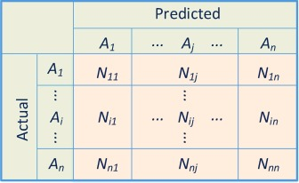
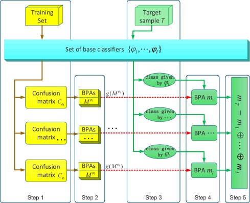
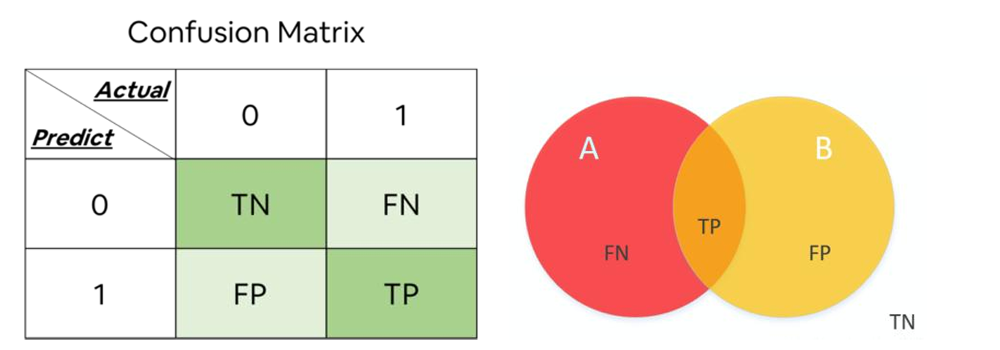

7 Week7 - Classification and Accuracy
7.1 Abstract
Here is the overview of remote sensing techniques for classifying and assessing the accuracy of land cover data. Here are the key points:
Landcover Classification: It discusses the use of pre-classified data sources like GlobeLand30, ESA’s CCI, Dynamic World, MODIS, and Google building data for landcover classification.
Dynamic World: The page details the process of training, pre-processing, normalization, and classification using CNNs, with a focus on Dynamic World’s semi-supervised approach and regional division for sample stratification.
Sub Pixel Analysis: It explains the concept of sub pixel classification, spectral mixture analysis, and linear spectral unmixing, including mathematical formulas for calculating the proportion of landcover per pixel.
Accuracy Assessment: The page outlines various accuracy assessment methods in remote sensing, such as producer’s accuracy, user’s accuracy, overall accuracy, and the Kappa coefficient, along with their definitions and significance.
Building upon the foundation laid in Week 6, where I explored the classification process and tackled challenges like overfitting in decision trees, this week delves deeper into the evaluation of classification models, specifically focusing on Accuracy Assessment and the Confusion Matrix.
In the context of remote sensing and geospatial analysis, accuracy assessment is critical to understanding how well a classification model performs. A classification model assigns labels to pixels or objects in an image based on the training data provided. However, to gauge the model’s effectiveness, we need to compare the predicted labels with the actual ground truth labels, which is where the confusion matrix comes into play.
7.2 Confusion Matrix and Accuracy Metrics
A confusion matrix is a table used to evaluate the performance of a classification algorithm. It provides a detailed breakdown of the model’s predictions compared to the actual labels(Townsend, J. T., 19711). The matrix consists of four key components:
- True Positives (TP): The number of correct predictions where the model accurately classified a positive instance.
- True Negatives (TN): The number of correct predictions where the model accurately classified a negative instance.
- False Positives (FP): The number of incorrect predictions where the model incorrectly classified a negative instance as positive.
- False Negatives (FN): The number of incorrect predictions where the model incorrectly classified a positive instance as negative.
These metrics provide insights into the model’s performance, indicating how well it can distinguish between different classes and how reliable its predictions are.
7.3 Multi-Class Confusion Matrix
There are also confusion matrix for a multi-class classification task(Sammut, C. et al., 20112:), with the classes \(A_1\), \(A_2\), and \(A_n\). In the confusion matrix, \(N_{ij}\) represents the number of samples actually belonging to class \(A_i\) but classified as class \(A_j\).

Accuracy for Multi-Class Classification
The overall accuracy of the classifier can be computed as:
\[ \text{Accuracy} = \frac{\sum_{i=1}^{n} N_{ii}}{\sum_{i=1}^{n} \sum_{j=1}^{n} N_{ij}} \]
Where:
\(N_{ii}\) is the number of correctly classified instances for class \(A_i\).
\(\sum_{i=1}^{n} \sum_{j=1}^{n} N_{ij}\) is the total number of instances across all classes.
Precision for Class \(A_i\)
\[ \text{Precision}(A_i) = \frac{N_{ii}}{\sum_{j=1}^{n} N_{ji}} \]
Where:
\(N_{ii}\) is the number of true positives for class \(A_i\).
\(\sum_{j=1}^{n} N_{ji}\) is the total number of instances predicted as class \(A_i\) (both correctly and incorrectly).
Recall for Class \(A_i\)
\[ \text{Recall}(A_i) = \frac{N_{ii}}{\sum_{j=1}^{n} N_{ij}} \]
Where:
\(N_{ii}\) is the number of true positives for class \(A_i\).
\(\sum_{j=1}^{n} N_{ij}\) is the total number of actual instances of class \(A_i\).
F1 Score for Class \(A_i\)
\[\text{F1Score}(A_i) = 2 \times \frac{\text{Precision}(A_i) \times \text{Recall}(A_i)}{\text{Precision}(A_i) + \text{Recall}(A_i)}\]
These metrics help evaluate the performance of a multi-class classification model, providing insights into how well each class is being predicted and how balanced the classifier’s performance is across all classes.
7.4 Improved confusion matrix
In 2016, Xinyang Deng et al. (2016)3 proposed an improved method for constructing Basic Probability Assignment (BPA) using a confusion matrix. The method is designed to better utilize the information provided by the confusion matrix to enhance the effectiveness of BPA construction in classification problems.

Utilization of Confusion Matrix: The method leverages the recall and precision values derived from the confusion matrix to construct BPA. These values provide critical insights into the performance of each class in the classification process.
Dual Evidence Sources: Recall and precision are treated as two distinct evidence sources. The final BPA is constructed by synthesizing these two sources of evidence, allowing for a more robust representation of uncertainty in classification outcomes.
Multi-Classifier System: The method is applicable to multi-classifier systems, where multiple classifiers are combined. The Dempster-Shafer theory is employed to fuse the information from these classifiers, enabling more accurate and reliable decision-making.
These enhancements aim to make better use of the information within the confusion matrix, improving the effectiveness of BPA construction in classification tasks.
7.5 Accuracy and Misclassification
While accuracy is a useful measure, it is important to be mindful of potential imbalances in the data, where one class may be more prevalent than others. In such cases, relying solely on accuracy can be misleading, as the model might simply be predicting the dominant class more frequently, leading to a high accuracy score but poor performance on minority classes. Therefore, other metrics like precision and recall, which focus on the model’s ability to correctly identify positive instances, become crucial.
7.6 Reflection
Continuing from the challenges discussed in Week 6, this week’s focus on accuracy and the confusion matrix highlights the importance of rigorous model evaluation in remote sensing. Ensuring that a classification model is not only accurate but also balanced and reliable across different classes is essential for effective geospatial analysis. This week has deepened my understanding of the critical role that accuracy assessment plays in model validation, and I am eager to apply these insights to improve the robustness of my classification models in future projects.
This reminds me of my undergraduate dissertation project, where I evaluated the accuracy of fire detection models using confusion matrices.

Firstly, I prepared the data by creating binary classification labels using both active detection thresholding and visual inspection methods as ground truth data. Next, I trained the model using a U-net neural network model on remote sensing images, applying both cross-entropy and focal loss functions. Finally, I made predictions and evaluations by predicting fire pixel locations in new images and assessing the differences between expected and original images using confusion matrix evaluation metrics to determine prediction accuracy. Evaluating accuracy was a crucial practical experience for me in using convolutional networks to predict fire spots in remote sensing images.
7.7 Reference
Townsend, J. T. (1971). Theoretical analysis of an alphabetic confusion matrix. Perception & Psychophysics, 9, 40-50.↩︎
Sammut, C., & Webb, G. I. (Eds.). (2011). Encyclopedia of machine learning. Springer Science & Business Media.↩︎
Deng, X., Liu, Q., Deng, Y. and Mahadevan, S., 2016. An improved method to construct basic probability assignment based on the confusion matrix for classification problem. Information Sciences, 340–341, pp.250-261. Available at: https://doi.org/10.1016/j.ins.2016.01.033↩︎